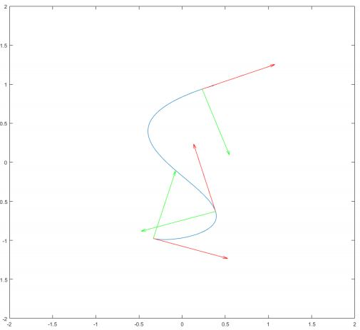
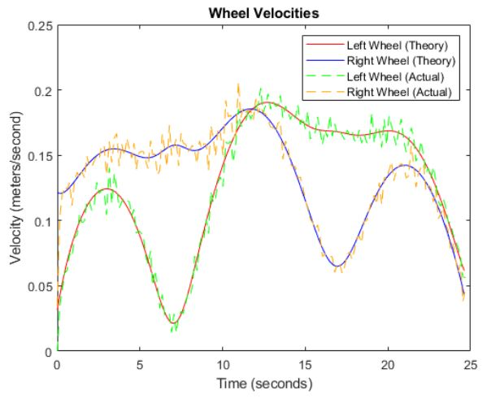

Parametric Curve Following Robot
This project was for my Qualitative Engineering Analysis (QEA) class. We used Neatos as the robots we were controlling. At the beginning of the assignment we were given the options to pick one of two different curves to plot and eventually have our robot follow. I picked the S-shaped parametric curve (shown to the right). The first task we had was to use MATLAB to plot the curve and add tangent/normal vectors at various points hence the green and red arrows respectively.
From there, I could use various equations to compute the velocity of the left and right wheels over time (shown on the left). I then wrote a program to send these wheel velocities to the Neato to guide it across the Bridge of Doom. The Bridge of Doom was a sheet of plywood that had been cut to follow the parametric curve I was given. It was also designed to only be slightly larger than the Neato to lower the room for error so our calculations and programs had to be precise. My attempt at crossing the Bridge of Doom can be seen below.